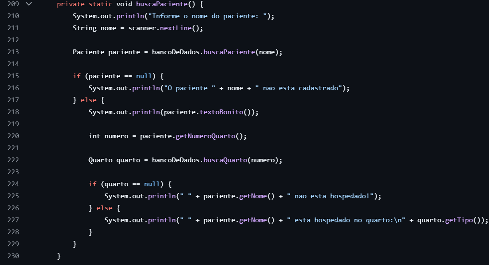
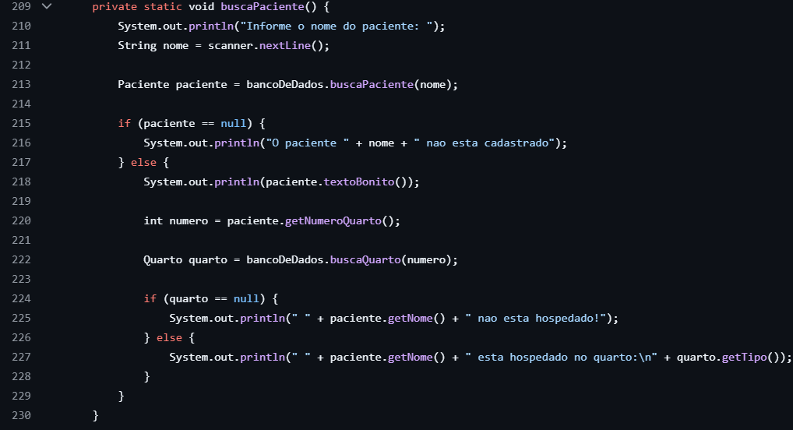

GeniuStudy
Sistema para cadastro de professores e alunos para tutoria. Este projeto foi executado usando o NetBeans com swing e linguagem Java. Projeto feito para a disciplina LPOO.


Sou Francielly Dias Macedo Trancoso Dal-cim e já cursei Tecnico em Mecanica e fiz estágio na área. Também cursei Engenharia Civil porém não concluí o curso (trancado no 8º periodo). E agora eu estou mergulhando no mundo do desenvolvimento de software. Já aprendi um pouco de Java, Python, Kotlin, SQL, HTML e CSS. Cada novo conceito que descubro me deixa animada, pois adoro o processo de aprendizado e a sensação de dominar novas habilidades. Estou determinada a continuar crescendo e aprendendo cada vez mais e sempre buscar aprimorar meu conhecimento.
Sistema para cadastro de professores e alunos para tutoria. Este projeto foi executado usando o NetBeans com swing e linguagem Java. Projeto feito para a disciplina LPOO.
Foi uma aplicação computacional referente a uma área de negócio usando armazenamento de dados em arquivo TXT. Projeto feito na linguagem Java e com banco de dados.
 

Usando a linguagem Python, apliquei o conhecimento sobre a estrutura de dados homogênea bidimensional (matriz) e unidimensional (vetor) no desenvolvimento dessa aplicação computacional referente a uma área de negócio.
Contatos